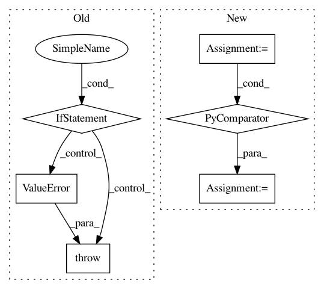

97b2ccec94583a7876566a340f06e84a63340272,pgmpy/inference/ExactInference.py,VariableElimination,induced_graph,#VariableElimination#,210
Before Change
<networkx.classes.graph.Graph at 0x7f34ac8c5160>
// If the elimination_order list is incomplete, raise an error
if len(elimination_order) < len(self.variables):
raise ValueError("Elimination order incomplete")
// If the elimination_order list is incomplete, raise an error
if set(elimination_order) != set(self.variables):
raise ValueError("Set of variables in elimination order"
" different from variables in model")
After Change
working_factors[variable].append(list(phi))
eliminated_variables.add(var)
edges_comb = [itertools.combinations(c, 2)
for c in filter(lambda x: len(x) > 1, cliques)]
return nx.Graph(itertools.chain(*edges_comb))
class BeliefPropagation(Inference):
In pattern: SUPERPATTERN
Frequency: 4
Non-data size: 6
Instances
Project Name: pgmpy/pgmpy
Commit Name: 97b2ccec94583a7876566a340f06e84a63340272
Time: 2015-03-26
Author: pratyaksh@me.com
File Name: pgmpy/inference/ExactInference.py
Class Name: VariableElimination
Method Name: induced_graph
Project Name: oddt/oddt
Commit Name: 86698c801848975de9a21fb17093e045b6271ea3
Time: 2018-05-17
Author: maciek@wojcikowski.pl
File Name: rdkit_fixer.py
Class Name:
Method Name: PreparePDBMol
Project Name: cesium-ml/cesium
Commit Name: e547a82c24b37c157bc9b40d2724a7b1fd0a7b0f
Time: 2017-04-17
Author: brettnaul@gmail.com
File Name: cesium/featurize.py
Class Name:
Method Name: save_featureset
Project Name: pymanopt/pymanopt
Commit Name: 618c1cac7908e5aa61fd95e0d1c6c1f31a2db95d
Time: 2016-02-19
Author: niklas.koep@gmail.com
File Name: pymanopt/core/problem.py
Class Name: Problem
Method Name: backend